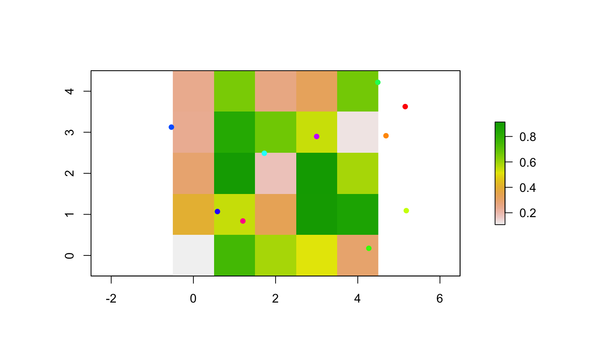

Create n moving agents with a set of defined variables.
createTurtles(n, coords, world, heading, breed, color) # S4 method for numeric,matrix,missing createTurtles(n, coords, world, heading, breed, color) # S4 method for numeric,missing,ANY createTurtles(n, coords, world, heading, breed, color)
| n | Integer. |
|---|---|
| coords | Matrix ( |
| world |
|
| heading | Numeric. Vector of values between 0 and 360. Must be of length 1 or
of length |
| breed | Character. Vector of |
| color | Character. Vector of |
AgentMatrix object of length n with data for the
turtles being: xcor, ycor, who, heading, prevX, prevY,
breed, and color.
If coords is provided, world must not be provided.
The identity of the turtles is defined by their who number. This
numbering starts at 0 and increments by 1.
The coordinates from the previous time step are stored in prevX and
prevY. The initial values are NA.
Wilensky, U. 1999. NetLogo. http://ccl.northwestern.edu/netlogo/. Center for Connected Learning and Computer-Based Modeling, Northwestern University. Evanston, IL.
w1 <- createWorld(minPxcor = 0, maxPxcor = 4, minPycor = 0, maxPycor = 4, data = runif(25)) t1 <- createTurtles(n = 10, coords = randomXYcor(w1, n = 10)) plot(w1)